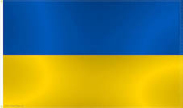
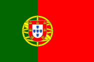
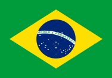

Країни світу
Країни
- Україна
- Іспанія
- Португалія
- Аргентина
- Бразилія

Зміст

Зміст

Зміст

Зміст

Зміст
Україна
Украї́на — держава, розташована в Східній та частково в Центральній Європі, у південно-західній частині Східноєвропейської рівнини. Площа становить 603 628 км². Найбільша за площею країна з тих, чия територія повністю лежить у Європі. Межує з Білоруссю на півночі, Польщею, Словаччиною та Угорщиною — на заході, Румунією та Молдовою — на південному заході, Росією на сході і північному сході. На півдні і південному сході омивається Чорним і Азовським морями.
Зміст
Іспанія
Іспа́нія — держава на південному заході Європи. Займає більшу частину Піренейського півострова, Балеарські та Пітіузькі острови в Середземному морі, Канарські острови в Атлантичному океані. Іспанія омивається Середземним морем й Атлантичним океаном. По суходолу Іспанія межує з Португалією на заході (спільний кордон — 1214 км), з Францією — по гребенях Піренейських гір (623 км), з Андоррою (63,7 км), з Гібралтаром та з Марокко.
Зміст
Португалія
Португа́лія. Розташована в західній частині Піренейського півострова. Контролює Азорські острови і Мадейру в Атлантичному океані. На півночі та сході межує з Іспанією. На заході й півдні омивається водами океану. Площа — понад 92 тисячі км² (109-та країна за величиною в світі). За останнім переписом 2011 року населення країни становило понад 10,5 мільйонів осіб. Середня густота населення — 115 особи на км². Столиця — Лісабон. Основне населення — португальці. Офіційна мова — португальська. Панівна релігія — католицизм. Постала на теренах давньоримської провінції Лузітанія.
Зміст
Аргенти́на
Аргенти́на — держава в Південній Америці, що займає південно-східну частину материка, східну частину о. Вогняна Земля і низку островів у південній Атлантиці. Межує на півдні й заході з Чилі, на північному заході з Болівією, на сході з Парагваєм, Бразилією, Уругваєм і омивається Атлантичним океаном. Площа 2 780 092 км². За переписом 2010 року населення Аргентини становить 40 091 359 осіб. Орієнтовна кількість жителів на 2016 рік 43 847 430 Столиця — Буенос-Айрес. Офіційна мова — іспанська. Грошова одиниця — аргентинський песо.
Зміст
Брази́лія
Брази́лія — держава в Південній Америці, що межує на південному заході з Уругваєм, Аргентиною, Парагваєм і Болівією, на заході з Перу і Колумбією, на півночі з Венесуелою, Гаяною, Суринамом і Французькою Гвіаною, на сході омивається Атлантичним океаном. П'ята у світі країна за площею, що становить 8 511 965 км². Столиця — місто Бразиліа.
Зміст
Повернутися до змісту